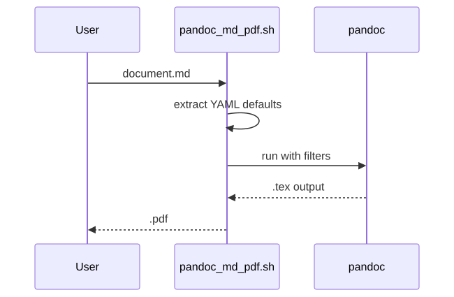
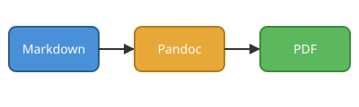

| n | time_ms | error |
|---|---|---|
| 10.0 | 0.0 | 9.47e-17 |
| 100.0 | 0.44 | 5.9e-16 |
| 1000.0 | 3.75 | 1.48e-15 |
| 10000.0 | 39.9 | 8.27e-16 |



Utilities for my pandoc/markdown/LaTeX workflows.
pandoc-utils/
|-- pandoc_md_pdf.sh # markdown -> LaTeX -> PDF pipeline
|-- Makefile # install, test, check-deps targets
|-- pyproject.toml # Python deps managed via uv
|-- markdown_get_defaults_yaml.py # (internal) extract pandoc config from YAML front matter
+-- filters/
|-- svg_to_pdf.py # convert SVG images to PDF for LaTeX
|-- mermaid.py # render mermaid diagrams to SVG/PDF
|-- csv_tex_table.py # CSV code blocks to tables
|-- include-files.lua # include external markdown files
|-- include-code-files.lua # include source code snippets
|-- columns.lua # multi-column layout (HTML + LaTeX)
+-- table.lua # YAML-driven table templatingMain conversion pipeline: markdown -> LaTeX -> PDF with optional bibliography support.
pandoc_md_pdf.sh document.md # convert to PDF
pandoc_md_pdf.sh document.md -b # convert with bibliography (biber)Extracts pandoc configuration from the document’s YAML front matter
(via uv run markdown_get_defaults_yaml.py), then runs
pandoc and pdflatex. Produces .tex, .pdf, and
.pdlog files.
pandoc_md_pdf.sh. Resolves the
$FILTERS$ placeholder to the actual filters directory.Pandoc filters are referenced in YAML front matter using the
$FILTERS$ placeholder:
---
__defaults__:
filters:
- $FILTERS$/mermaid.py
- $FILTERS$/svg_to_pdf.py
- $FILTERS$/columns.lua
---Converts .svg images to PDF using Inkscape when
targeting LaTeX output. Caches results — only re-converts when the SVG
is newer than the existing PDF.
Renders mermaid code blocks to SVG (HTML output) or PDF
(LaTeX output) using mmdc. For LaTeX, converts SVG ->
PDF via Inkscape and crops with pdfcrop. Caches output by
content hash.
Converts csvtable code blocks containing CSV data into
pandoc tables. (WIP)
Includes external markdown files at compile time. Supports recursive inclusion, heading level shifting, relative path resolution, and comment lines.
```include
chapter1.md
chapter2.md
```Includes source code from external files into code blocks, with optional line range selection and dedentation.
```python {include="src/main.py" startLine=10 endLine=25 dedent=4}
```Multi-column layout support for both HTML (CSS columns) and LaTeX
(multicols). Configurable column count, gap, rules, and
justification.
::: {.columns column-count=3 column-gap="1em"}
Column 1 content
::: columnbreak
:::
Column 2 content
:::YAML-driven table generation with reusable templates, configurable alignment and widths, auto-numbering, and horizontal orientation support.
Dependencies are managed via Makefile and
pyproject.toml:
make install # install system (apt), npm, and Python (uv) deps
make dep-check # verify all required binaries are available
make test # run pytestSystem binaries: uv,
pandoc (>=2.12), pdflatex,
inkscape, mmdc (mermaid-cli),
pdfcrop, magick (ImageMagick),
biber (optional)
Python (managed by uv via
pyproject.toml): pyyaml,
pandocfilters, pandas
Full file:
# /// script
# requires-python = ">=3.10"
# dependencies = [
# "pandocfilters",
# "pandas",
# ]
# ///
"""
pandoc filter to process code blocks with class "csvtable",
turning csv-formatted data into a table
"""
from typing import Any
from io import StringIO
import pandas as pd
from pandocfilters import toJSONFilter, get_caption
READ_KWARGS_DEFAULT: dict[str, Any] = {}
def _emptyblock() -> list:
return ["", [], []]
def _plain_factory(val: str) -> dict:
return {
"t": "Plain",
"c": [{"t": "Str", "c": val.strip()}],
}
def _table_cell_factory(val: str) -> list:
return [
_emptyblock(),
{"t": "AlignDefault"},
1,
1,
[_plain_factory(val)],
]
def _table_row_factory(vals: list[str]) -> list:
return [_emptyblock(), [_table_cell_factory(v) for v in vals]]
def _header_factory(vals: list[str]) -> list:
return [_emptyblock(), [_table_row_factory(vals)]]
def _body_factory(rows: list[list[str]]) -> list:
return [
[
_emptyblock(),
0,
[],
[_table_row_factory(row) for row in rows],
]
]
def rawcsv_to_df(
in_csv: str,
read_kwargs: dict[str, Any] | None = None,
) -> pd.DataFrame:
if read_kwargs is None:
read_kwargs = READ_KWARGS_DEFAULT
return pd.read_csv(StringIO(in_csv), **read_kwargs)
def csv_tex_table(
key: str, value: Any, format: str, meta: Any
) -> dict[str, Any] | None:
if key != "CodeBlock":
return None
[[ident, classes, keyvals], code] = value
if "csvtable" not in classes:
return None
caption, typef, keyvals = get_caption(keyvals)
df = rawcsv_to_df(code)
n_cols = len(df.columns)
colspecs = [[{"t": "AlignCenter"}, {"t": "ColWidthDefault"}] for _ in range(n_cols)]
header = _header_factory([str(c) for c in df.columns])
body = _body_factory([[str(v) for v in row] for row in df.to_numpy().tolist()])
foot = [_emptyblock(), []]
cap = [
None,
[]
if not caption
else [_plain_factory(" ".join(s["c"] for s in caption if "c" in s))],
]
return {
"t": "Table",
"c": [_emptyblock(), cap, colspecs, header, body, foot],
}
def main() -> None:
"""Entry point for the pandoc filter."""
toJSONFilter(csv_tex_table)
if __name__ == "__main__":
main()Line range with dedent:
--[[-- # Columns - multiple column support in Pandoc's markdown.
This Lua filter provides support for multiple columns in
latex and html outputs. For details, see README.md.
from: https://github.com/dialoa/columns/blob/master/columns.lua
@author Julien Dutant <julien.dutant@kcl.ac.uk>
@copyright 2021 Julien Dutant
@license MIT - see LICENSE file for details.Column 1 — Filters process the document AST, transforming custom code blocks and divs into native pandoc elements.
Column 2 — Output adapts to the target format:
LaTeX uses multicols, HTML uses CSS columns.
Column 3 — All filters can be combined freely in a single document via the YAML front matter.
Left column content goes here. The two-columns class is
syntactic sugar for {.columns column-count=2}.
Right column content goes here.
Left column.
Right column.
This paragraph spans across all columns.
| # | Role | Responsibility |
|---|---|---|
| 1 | Developer |
|
| 2 | Designer |
|
| 3 | Manager |
|
| Current (mA) | Voltage (V) | Power (mW) |
|---|---|---|
| 15 | 3 | 45 |
| 16 | 3.1 | 49.6 |
| 14 | 2.9 | 40.6 |
| Field | Value |
|---|---|
| Name | pandoc-utils |
| Language | Python, Lua, Bash |
| License | MIT |